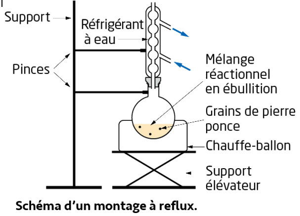
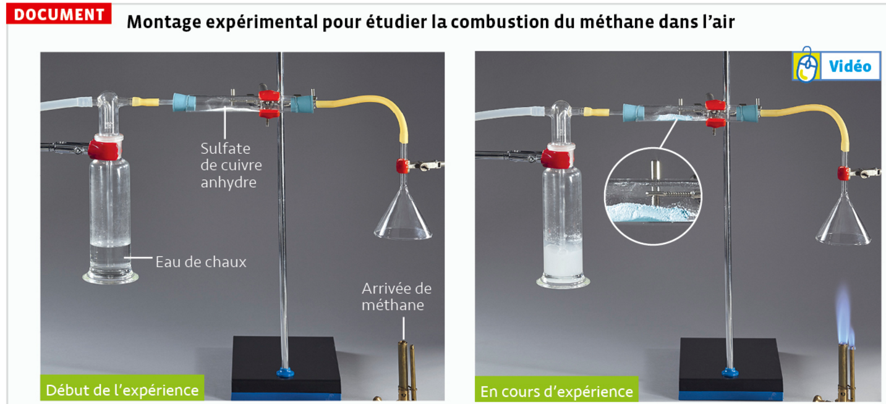
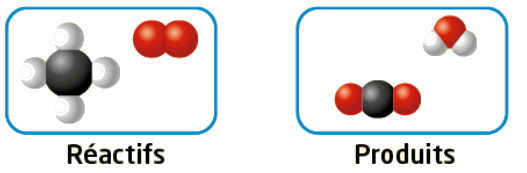
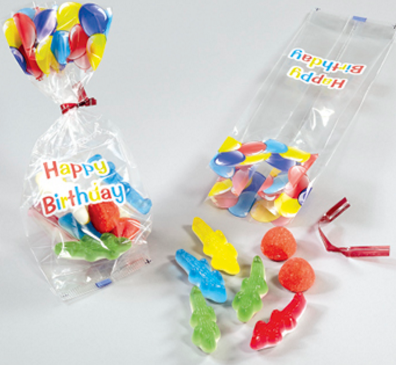
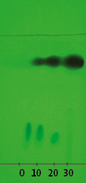
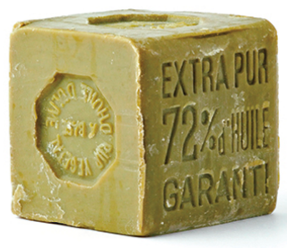

1. Transformation chimique
a. Définitions
Transformation chimique
Une transformation chimique est le passage d'un système chimique d'un état initial à un état final avec formation de nouvelles espèces chimiques.
- Les réactifs sont les espèces chimiques consommées.
- Les produits sont les espèces chimiques formées.
- Les espèces spectatrices ne réagissent pas et n'apparaissent pas dans l'équation.
Équation de réaction
L'équation de réaction traduit la conservation des éléments et de la charge électrique entre les réactifs et les produits.
Les coefficients assurent que le nombre d'atomes de chaque élément est identique de part et d'autre de la flèche.
b. Équilibrer une équation — activité interactive
🔥 Combustion du propane C₃H₈
Le propane brûle dans le dioxygène pour former du dioxyde de carbone et de l'eau. Trouve les bons coefficients stœchiométriques en modifiant les valeurs ci-dessous.
c. Réactif limitant
Réactif limitant
Lors d'une transformation chimique totale, l'un au moins des réactifs est entièrement consommé : c'est le réactif limitant.
- Si nA/nB = a/b → mélange stœchiométrique : tous les réactifs sont consommés.
- Si nA/nB < a/b → A est limitant, B est en excès.
- Si nA/nB > a/b → B est limitant, A est en excès.
🎚 Simulation — Réactif limitant (synthèse de l'aspirine)
Réaction : acide salicylique (A) + anhydride éthanoïque (B) → aspirine (C) + acide éthanoïque (D) · a = b = 1
Fais varier le ratio n(A)/n(B) et observe le réactif limitant ainsi que le tableau d'avancement.
| État | n(A) acide salicylique | n(B) anhydride éthanoïque | n(C) aspirine | n(D) acide éthanoïque |
|---|---|---|---|---|
| Initial | 1,00 mol | 1,00 mol | 0 | 0 |
| Final | 0 | 0 | 1,00 mol | 1,00 mol |
🔩 Application — Corrosion du zinc par l'acide chlorhydrique
On fait réagir du zinc solide Zn avec une solution d'acide chlorhydrique. L'équation de réaction est :
Zn (s) + 2 HCl (aq) → ZnCl₂ (aq) + H₂ (g)
À la fin de la réaction, on observe qu'il reste encore du zinc solide visible dans le récipient.
2. Synthèse chimique
a. Espèces naturelles, synthétiques et artificielles
Définitions
- Une espèce chimique naturelle est issue de la nature (plantes, minéraux, animaux…).
- Une espèce chimique synthétique est fabriquée par l'Homme — qu'elle existe ou non dans la nature.
- Si elle n'existe pas dans la nature, on parle d'espèce artificielle.
- Une espèce synthétisée au laboratoire peut être identique à une espèce naturelle (mêmes propriétés physiques et chimiques).
🍬 Les colorants des Dragibus
Les bonbons Dragibus contiennent les colorants suivants. Identifie leur origine.
| Code | Nom | Couleur | Origine |
|---|---|---|---|
| E100 | Curcumine | 🟡 Jaune | Naturelle — extrait du curcuma |
| E131 | Bleu patenté V | 🔵 Bleu | Artificielle — colorant de synthèse inexistant dans la nature |
| E153 | Charbon végétal | ⚫ Noir | Naturelle — charbon d'origine végétale |
| E160a | Bêta-carotène | 🟠 Orange | Synthétique — identique au naturel (carotte) · non artificielle |
| E163 | Anthocyanes | 🟣 Violet/rouge | Naturelle — extrait de fruits rouges |
b. Les étapes d'une synthèse chimique
👆 Clique sur une étape pour afficher les détails.
⚖️ Étape 1 — Prélèvement des réactifs
- Réactif solide → on pèse une masse à l'aide d'une balance et d'un récipient de pesée.
- Réactif liquide → on mesure un volume à l'aide d'une éprouvette graduée, d'une pipette jaugée ou d'une burette.
- Réactif en solution → on mesure un volume de solution à la concentration connue.
- Consulter impérativement les fiches de données de sécurité (FDS) et les pictogrammes de danger avant manipulation.
- Porter les équipements de protection individuelle (EPI) adaptés : lunettes, gants, blouse.
- Travailler sous hotte aspirante si les réactifs sont volatils ou toxiques.
🔥 Étape 2 — Transformation chimique
- Le produit se forme au cours de cette étape. Les réactifs sont mélangés dans le récipient de réaction (ballon, erlenmeyer…).
- Certaines réactions nécessitent un chauffage pour s'accélérer. On utilise alors un montage à reflux.
- Le chauffe-ballon chauffe le mélange réactionnel → les réactifs (souvent volatils) se vaporisent.
- Les vapeurs montent dans le réfrigérant à eau : elles sont refroidies et condensées, puis retombent dans le ballon.
- On chauffe ainsi sans perdre de matière : la réaction est accélérée et le rendement est préservé.
- Une pierre ponce (ou quelques grains de pierre ponce) régule l'ébullition et évite les projections.
- La durée de chauffage et la température sont précisées dans le protocole expérimental.
- Ne jamais fermer hermétiquement le haut du réfrigérant (risque de surpression).
🧫 Étape 3 — Isolement du produit
- Extraction liquide-liquide (ampoule à décanter) : si le produit est soluble dans un solvant non miscible à l'eau. Le solvant le plus dense se retrouve dans la phase inférieure.
- Filtration (entonnoir + papier filtre ou Büchner) : si le produit est solide et insoluble dans le mélange réactionnel.
- Distillation : si le produit est liquide et présente un point d'ébullition bien différent des autres constituants.
- Un lavage est souvent nécessaire pour éliminer les impuretés restantes.
- On obtient le produit brut, qui peut encore contenir des impuretés → étape 4.
🔍 Étape 4 — Analyse du produit brut
- Chromatographie sur couche mince (CCM) : compare le Rf du produit brut avec celui d'un témoin (espèce naturelle). Même Rf → même espèce.
- Température de fusion (banc Kofler) : comparée à la valeur tabulée.
- Température d'ébullition : mesurée lors de la distillation.
- Indice de réfraction (réfractomètre) : caractéristique d'un liquide pur.
- Densité : comparée à la valeur tabulée.
- Si toutes les caractéristiques correspondent → l'espèce synthétisée est identique à l'espèce naturelle.
- Si elles diffèrent → le produit est impur ou la synthèse n'a pas donné le bon produit.
c. Montage à reflux
Principe du montage à reflux
Le montage à reflux permet de chauffer le milieu réactionnel pour accélérer la transformation chimique sans perte de matière : les vapeurs qui se dégagent du ballon sont condensées par le réfrigérant à eau et retombent dans le ballon.

d. Application guidée — Synthèse de la menthone
🌿 Synthèse de la menthone à partir du menthol
Données : On introduit 6,24 g de menthol et un excès de KMnO₄. La réaction est réalisée dans un montage à reflux pendant 15 minutes. La menthone est ensuite extraite par du cyclohexane (ρ = 0,78 g·mL⁻¹, non miscible à l'eau).
Parmi les propositions suivantes, laquelle décrit correctement les réactifs et le produit de cette synthèse ?
Les réactifs sont le menthol (C₁₀H₂₀O) et le permanganate de potassium KMnO₄ (en excès).
Le produit principal est la menthone (C₁₀H₁₈O).
Le cyclohexane n'est pas un réactif : c'est le solvant d'extraction utilisé à l'étape 3.
La menthone synthétisée est identique à l'espèce naturelle : mêmes propriétés physiques et chimiques.
Quelle est la quantité de matière de menthol introduite ? (M = 156 g·mol⁻¹, m = 6,24 g)
0,024 mol vient d'une erreur de formule (m/M inversé ou mauvaise valeur). 0,975 mol correspond au résultat de m × M, pas de m / M.
Pourquoi utilise-t-on un montage à reflux pour cette synthèse ? Choisis la meilleure réponse.
Le montage à reflux permet de chauffer le milieu réactionnel (accélération de la réaction) sans perte de matière : les vapeurs qui se dégagent du ballon sont condensées par le réfrigérant à eau et retombent dans le ballon.
Le reflux chauffe, il ne refroidit pas. La séparation par extraction est faite à l'étape 3, pas pendant la réaction.
On verse du cyclohexane (ρ = 0,78 g·mL⁻¹) dans l'ampoule à décanter contenant le mélange réactionnel aqueux. Sachant que seule la menthone est soluble dans le cyclohexane, dans quelle phase se trouve-t-elle ?
ρ(cyclohexane) = 0,78 g·mL⁻¹ < ρ(eau) = 1,0 g·mL⁻¹ → le cyclohexane est moins dense que l'eau : il forme la phase supérieure.
La menthone, soluble uniquement dans le cyclohexane, se retrouve donc dans la phase supérieure (phase organique).
On récupère cette phase supérieure pour isoler la menthone.
Parmi les techniques suivantes, lesquelles peuvent permettre de vérifier que la menthone synthétisée est identique à la menthone naturelle ? Coche toutes les bonnes réponses.
Pour prouver qu'une espèce synthétisée est identique à l'espèce naturelle, on compare leurs caractéristiques physiques avec les valeurs tabulées :
Application terminée !
Tu as parcouru les 5 questions sur la synthèse de la menthone.
Contexte
Le méthane, de formule CH4, est le constituant principal du gaz naturel. Il est essentiellement utilisé pour chauffer les habitations, car sa combustion libère de l'énergie.
Comment établir l'équation de réaction modélisant cette combustion ?
Document — Montage expérimental pour étudier la combustion du méthane dans l'air

1. S'approprier
- Visualiser la vidéo et prendre des notes pendant le visionnage.
- Citer les espèces consommées (appelées réactifs) lors de la combustion du méthane dans l'air. Préciser les formules de ces espèces chimiques.
Regarde les deux arrivées de gaz sur le montage : l'une amène le méthane, l'autre est simplement le milieu dans lequel il brûle. Une combustion consomme toujours un combustible et un comburant.
- Associer chacun des deux tests caractéristiques à l'espèce chimique qu'il met en évidence. Préciser les formules de ces deux espèces chimiques.
Le sulfate de cuivre anhydre change de couleur (blanc → bleu) en présence d'une espèce précise. L'eau de chaux se trouble en présence d'une autre espèce, gazeuse. À quels tests caractéristiques correspondent ces deux observations ?
- À partir de vos observations, déduire les espèces chimiques formées (appelées produits de réaction) au cours de la combustion.
Si les deux tests caractéristiques sont positifs, cela signifie que les deux espèces qu'ils révèlent sont présentes dans les produits de la réaction.
2. Réaliser
- Construire le modèle moléculaire de chaque espèce (réactifs et produits) mise en jeu lors de la combustion du méthane dans l'air.
Utilise les formules brutes établies dans la partie précédente et le code couleur habituel des modèles moléculaires : carbone en noir, hydrogène en blanc, oxygène en rouge.
- Construire les modèles moléculaires supplémentaires afin d'avoir le même nombre d'atomes au total dans les réactifs que dans les produits.
Compte séparément le nombre d'atomes de carbone, d'hydrogène et d'oxygène du côté des réactifs et du côté des produits. Ajoute des molécules identiques (pas de nouveaux types de molécules) jusqu'à ce que les totaux correspondent.
- Reproduire et compléter le dessin ci-dessous afin que le système initial, modélisé par les réactifs, et le système final, modélisé par les produits, respectent la conservation des éléments.
Lors d'une transformation chimique, les atomes ne disparaissent pas : chaque élément chimique présent dans l'état initial doit se retrouver, en même quantité, dans l'état final.

3. Valider
Écrire l'équation de la réaction modélisant la transformation étudiée.
Contexte
À l'occasion de son anniversaire, un adolescent souhaite préparer pour ses amis des sachets-cadeaux identiques de bonbons. Pour cela, il doit acheter des paquets de bonbons. Dans le magasin, il y a trois paquets différents de bonbons qui pourraient convenir pour son projet.
Quel paquet doit-il choisir ?

Données — Tableau 1 : composition des paquets de bonbons disponibles dans le magasin
| Paquet A | Paquet B | Paquet C | |
|---|---|---|---|
| Fraises en guimauve (notées F) | 10 | 10 | 10 |
| Crocodiles gélifiés (notés C) | 20 | 30 | 25 |
On note NF,i et NC,i les nombres initiaux respectivement de fraises et de crocodiles dans un paquet de bonbons, et NF,f et NC,f les nombres finaux respectivement de fraises et de crocodiles restants dans le paquet à l'issue de la préparation des sachets-cadeaux.
1. Réaliser
a. En analysant la photographie, écrire l'équation traduisant la préparation d'un sachet-cadeau sous la forme a F + b C → S, a et b étant des entiers positifs appelés nombres stœchiométriques.
b. Pour chaque paquet de bonbons, préparer le plus possible de sachets-cadeaux ; déterminer leur nombre et le nombre de bonbons non utilisés. Recopier et compléter le tableau 2.
Tableau 2 — Notations et constitution des sachets-cadeaux
| Paquet A | Paquet B | Paquet C | |
|---|---|---|---|
| NF,i | 10 | ||
| NF,f | 2 | ||
| NC,i | 25 | ||
| NC,f | 5 | ||
| NF,i / NC,i | 0,5 | ||
| a / b | 0,4 |
2. Analyser-Raisonner
a. Pour les paquets de bonbons A et B : indiquer le type de bonbon qui limite la préparation des sachets-cadeaux ; préciser si le quotient NF,i/NC,i des nombres initiaux de bonbons est inférieur ou supérieur au quotient a/b des nombres stœchiométriques.
b. Indiquer le paquet qu'il serait le plus judicieux d'acheter. Justifier la réponse.
3. Réaliser
Pour toute cette partie, on ne travaille qu'avec le paquet de bonbons A.
a. On utilise 6,02×10²³ paquets. Déterminer le nombre de fraises et de crocodiles disponibles.
b. En déduire les quantités de matière : initiale nF,i de fraises et finale nF,f de fraises non utilisées pour préparer les sachets-cadeaux ; initiale nC,i de crocodiles et finale nC,f de crocodiles non utilisés pour préparer les sachets-cadeaux.
c. Calculer le quotient nF,i/nC,i et le comparer au quotient a/b.
4. Communiquer
Le réactif limitant dans une transformation chimique est le réactif qui est entièrement consommé à la fin de cette transformation.
Réaliser un support visuel expliquant comment déterminer le réactif limitant à partir des quantités de matière des réactifs et de l'équation de réaction.
Animation interactive : le réactif limitant
Objectif : manipuler une animation interactive simulant une transformation chimique entre deux réactifs dans des proportions variables, pour visualiser directement quel réactif est entièrement consommé selon les quantités initiales.
Ressource : Physique-Chimie Seconde, éditions Hatier — Hatier Clic.
↗ Ouvrir l'animation dans un nouvel onglet
📋 Guide d'utilisation
Lance l'animation, fais varier les quantités initiales des deux réactifs proposés, puis observe l'état final du système pour répondre aux questions ci-dessous.
Exercice — Aluminium et acide chlorhydrique ⭐⭐⭐
De la poudre d'aluminium Al(s) et de l'acide chlorhydrique sont introduits dans un tube à essais. L'acide chlorhydrique contient l'ion hydrogène H⁺(aq) et l'ion chlorure Cl⁻(aq).
Une effervescence apparaît en raison de la production de dihydrogène H₂.
L'ion aluminium est également formé.
Le test caractéristique du dihydrogène consiste à approcher une allumette enflammée de l'embouchure du tube : la combustion du gaz produit une détonation (petit « aboiement »).
Sentir l'odeur ne permet pas d'identifier le dihydrogène, qui est inodore. Le bâtonnet incandescent est le test du dioxygène, pas du dihydrogène.
c. Écrire l'équation de réaction ajustée, sachant que les seuls produits de la transformation sont le dihydrogène et l'ion aluminium.
On ajuste d'abord les charges, puis les atomes, sur la base du transfert de 3 électrons par aluminium : 2 Al(s) + 6 H⁺(aq) → 2 Al³⁺(aq) + 3 H₂(g) Vérification : 2 Al à gauche et à droite ; 6 H à gauche (3 × H₂) et à droite ; charges +6 à gauche (6 H⁺) et +6 à droite (2 × 3+).
Al(s) + H⁺(aq) → Al³⁺(aq) + H₂(g) et Al(s) + 3 H⁺(aq) → Al³⁺(aq) + 3 H₂(g) ne conservent pas les charges électriques, et 2 Al(s) + 3 H⁺(aq) → 2 Al³⁺(aq) + 3 H₂(g) ne conserve pas le nombre d'atomes d'hydrogène.
Exercice — Corrosion du magnésium ⭐⭐
Un morceau de ruban de magnésium et de l'acide chlorhydrique, contenant l'ion hydrogène H⁺ et l'ion chlorure Cl⁻, sont introduits dans un tube à essais. Un gaz se forme. Une flamme est approchée de l'entrée du tube : une légère détonation se produit. Une fois le dégagement gazeux terminé, il ne reste pas de solide au fond du tube. À la fin de la transformation, l'ion magnésium Mg²⁺ est mis en évidence par un test caractéristique.
L'état initial est constitué de 20 mmol de magnésium et de 50 mmol d'ion hydrogène. L'ion chlorure est spectateur.
1. Écrire l'équation de réaction modélisant la transformation décrite.
Le magnésium cède 2 électrons pour former Mg²⁺, tandis que chaque ion H⁺ n'en capte qu'un seul (2 H⁺ + 2 e⁻ → H₂). Il faut donc 2 ions H⁺ pour un atome de magnésium : Mg(s) + 2 H⁺(aq) → Mg²⁺(aq) + H₂(g) Vérification : 1 Mg de chaque côté ; 2 H de chaque côté (2 H⁺ à gauche, 1 H₂ à droite) ; charges +2 à gauche (2 H⁺) et +2 à droite (Mg²⁺).
Mg(s) + H⁺(aq) → Mg²⁺(aq) + H₂(g) ne conserve ni les charges ni les atomes d'hydrogène ; Mg(s) + 2 H⁺(aq) → Mg²⁺(aq) + 2 H₂(g) et 2 Mg(s) + 2 H⁺(aq) → 2 Mg²⁺(aq) + H₂(g) ne conservent pas les charges électriques.
Exercice — L'aspirine : un remède ancien ⭐⭐
L'aspirine est une espèce chimique synthétique. Son principe actif est synthétisé à partir de l'acide salicylique. Cet acide a été extrait des saules pendant des siècles avant que sa synthèse ne soit mise au point. L'aspirine est le médicament dont la consommation mondiale est la plus importante : mh = 4 560 kg par heure.
Le traitement d'un échantillon de masse me = 50 g d'écorce de saule conduit à l'obtention d'un échantillon de masse ma = 5 g d'aspirine. D'un saule, on extrait en moyenne une masse mm = 23 kg d'écorce.
Exercice 1 — Transformation exothermique ⭐⭐
Dans un calorimètre, un échantillon d'eau de volume V = 200 mL est introduit et on relève la température θi = 20,2 °C. Un échantillon d'hydroxyde de sodium de masse m = 2,0 g est placé dans l'eau, le calorimètre est fermé et agité. La température du mélange est alors mesurée : θf = 31 °C.
L'expérience est refaite plusieurs fois avec le même volume d'eau, mais en modifiant la masse d'hydroxyde de sodium. Les résultats obtenus sont regroupés dans le tableau suivant :
| Expérience n° | Masse m d'hydroxyde de sodium (g) | Température finale du mélange θf (°C) |
|---|---|---|
| 1 | 2,0 | 31,0 |
| 2 | 3,0 | 36,1 |
| 3 | 4,0 | 42,0 |
| 4 | 5,0 | 46,9 |
| 5 | 6,0 | 52,3 |
b. Décrire qualitativement l'évolution de la température du mélange en fonction de la masse d'hydroxyde de sodium.
Plus la masse m d'hydroxyde de sodium introduite est grande, plus la température finale θf du mélange est élevée : la température du mélange augmente avec la masse d'hydroxyde de sodium dissoute.
Cette augmentation semble à peu près proportionnelle à la masse dissoute (quand m augmente régulièrement, l'écart θf − θi augmente lui aussi de façon à peu près régulière).
Si votre réponse ne mentionnait pas cette proportionnalité approximative, ce n'est pas grave à ce stade : la question c la mettra en évidence par le calcul.
c. Pour chaque expérience, calculer la variation de température Δθ = θf − θi.
| Expérience n° | m (g) | θf (°C) | Δθ = θf − θi (°C) |
|---|---|---|---|
| 1 | 2,0 | 31,0 | |
| 2 | 3,0 | 36,1 | |
| 3 | 4,0 | 42,0 | |
| 4 | 5,0 | 46,9 | |
| 5 | 6,0 | 52,3 |
Exp. 2 : 36,1 − 20,2 = 15,9 °C
Exp. 3 : 42,0 − 20,2 = 21,8 °C
Exp. 4 : 46,9 − 20,2 = 26,7 °C
Exp. 5 : 52,3 − 20,2 = 32,1 °C
d. Faire la représentation du nuage de points en plaçant Δθ en ordonnée et m en abscisse.
e. Tracer la droite passant au plus près des points.
1️⃣ Complète d'abord directement dans le programme les deux listes de valeurs m = [...] et theta_f = [...] avec les données du tableau précédent (question c).
2️⃣ Complète ensuite les instructions manquantes en choisissant la bonne réponse dans chaque liste déroulante ci-dessous — le programme se met à jour automatiquement.
Exercice 2 — Synthèse de l'ammoniac ⭐⭐
L'ammoniac, de formule NH₃, est un gaz irritant pour les voies respiratoires. Préparé industriellement, c'est une matière première nécessaire à la synthèse de nombreux matériaux polymères innovants, utilisés par exemple dans la fabrication de skis.
Lors de la synthèse industrielle de l'ammoniac, l'un des réactifs est l'un des constituants de l'air. L'autre réactif est un gaz qui produit une petite détonation en présence d'air et d'une flamme.
b. Indiquer les réactifs de la synthèse industrielle de l'ammoniac. Préciser leur état physique.
Le diazote N₂ est l'un des constituants de l'air (environ 4/5).
Le dihydrogène H₂ se reconnaît au test caractéristique classique : une petite détonation (« aboiement ») lorsqu'on approche une flamme du gaz.
Les deux réactifs sont gazeux.
c. Écrire l'équation de réaction modélisant la synthèse de l'ammoniac.
On ajuste d'abord l'azote : 1 molécule N₂ apporte 2 atomes N, il faut donc 2 NH₃ pour les retrouver. On ajuste ensuite l'hydrogène : 2 NH₃ contiennent 6 atomes H, il faut donc 3 H₂. N₂(g) + 3 H₂(g) → 2 NH₃(g) Vérification : 2 N et 6 H de chaque côté de la flèche.
d. On souhaite préparer une quantité n = 2,0 mol d'ammoniac. Exprimer puis calculer la quantité d'air nécessaire à la synthèse.
D'après l'équation N₂(g) + 3 H₂(g) → 2 NH₃(g), les quantités de matière sont proportionnelles aux coefficients stœchiométriques : n(N₂) / 1 = n(NH₃) / 2 ⟹ n(N₂) = n(NH₃) / 2 = 2,0 / 2 = 1,0 mol L'air contenant environ 4/5 de diazote (en quantité de matière) : n(air) = n(N₂) × 5/4 = 1,0 × 5/4 = 1,25 mol ≈ 1,3 mol
Exercice 3 — Durée d'une transformation ⭐⭐⭐
Le benzaldéhyde est une espèce ayant l'odeur d'amande amère. Elle est présente naturellement dans les noyaux d'abricots. La synthèse du benzaldéhyde est possible par action de l'eau de Javel sur l'alcool benzylique. La transformation est effectuée au laboratoire et suivie par chromatographie sur couche mince.
Pour cela, un premier dépôt est réalisé avant introduction de l'eau de Javel. Ensuite, une partie du milieu réactionnel est prélevée toutes les 10 minutes, puis un dépôt est réalisé avec ce prélèvement sur la même plaque. Après élution et révélation sous UV, le chromatogramme ci-contre est obtenu.
L'alcool benzylique est faiblement révélé car il absorbe peu les UV. L'eau de Javel n'est pas révélée car elle n'absorbe pas les UV. Le benzaldéhyde est fortement révélé car il absorbe beaucoup les UV.
La transformation étudiée n'est pas instantanée.

c. À la date t = 0, il n'y a qu'une seule tache au-dessus du dépôt. Justifier.
À t = 0, le dépôt est réalisé avant l'introduction de l'eau de Javel : le milieu ne contient donc que l'alcool benzylique (le réactif initialement présent). Le benzaldéhyde n'a pas encore eu le temps de se former, et même si l'eau de Javel était déjà présente, elle ne serait pas révélée sous UV.
La seule tache visible au-dessus du dépôt à t = 0 est donc celle de l'alcool benzylique.
d. Sur le chromatogramme, identifier la tache associée à l'alcool benzylique et celle associée au benzaldéhyde.
L'énoncé précise que l'alcool benzylique est faiblement révélé (tache verte, discrète, proche du dépôt) tandis que le benzaldéhyde est fortement révélé (tache foncée). Sur le chromatogramme, la tache du bas grandit puis disparaît (réactif consommé), tandis que la tache du haut apparaît et grossit avec le temps (produit formé) : elle correspond donc au benzaldéhyde.
f. Donner une estimation de la durée de la transformation.
Sur le chromatogramme, la tache de l'alcool benzylique (réactif limitant) est encore visible, bien que faible, au prélèvement t = 20 min, mais elle a totalement disparu au prélèvement t = 30 min.
La transformation, qui se termine lorsque le réactif limitant est entièrement consommé, s'est donc achevée entre 20 et 30 minutes après le début de l'introduction de l'eau de Javel.
Exercice 4 — Synthèse d'un savon ⭐⭐
L'oléine, de formule C₅₇H₁₀₄O₆, est une espèce chimique naturellement présente dans les matières grasses. Elle est utilisée dans la synthèse des savons.
De l'oléine et de la soude (solution contenant des ions hydroxyde HO⁻ et sodium Na⁺) sont introduites dans un ballon. Ce mélange est chauffé à reflux pendant 30 min : il devient progressivement visqueux, en raison de la formation de savon de formule C₁₇H₃₃CO₂Na.
L'état initial est constitué de 17 mmol d'oléine, de 0,20 mol d'ion hydroxyde et de 0,20 mol d'ion sodium. Outre le savon, la transformation produit du glycérol de formule C₃H₈O₃.

a. Parmi les trois montages ci-dessous, identifier celui qui correspond au dispositif de chauffage à reflux utilisé pour cette synthèse.
Montage 1
Montage 2
Montage 3
🔗 Schémas issus de lelivrescolaire.fr
b. Écrire l'équation de la réaction modélisant la synthèse du savon.
C₅₇H₁₀₄O₆ + 3 HO⁻ → C₃H₈O₃ + 3 C₁₇H₃₃CO₂⁻
(les ions Na⁺ sont spectateurs : on peut aussi regrouper l'écriture avec 3 NaOH comme réactif et 3 C₁₇H₃₃CO₂Na, c'est-à-dire le savon, comme produit)
Vérification des atomes : à gauche, 57 C, 104 + 3 = 107 H et 6 + 3 = 9 O ; à droite, 3 + 3×18 = 57 C, 8 + 3×33 = 107 H et 3 + 3×2 = 9 O. L'équation est bien équilibrée.
c. Déterminer le réactif limitant.
D'après l'équation, il faut 3 mol d'ion hydroxyde pour consommer entièrement 1 mol d'oléine.
Pour consommer n(oléine) = 17 mmol = 0,017 mol, il faudrait :
n(HO⁻) nécessaire = 3 × n(oléine) = 3 × 0,017 = 0,051 mol
Or la quantité d'ion hydroxyde réellement introduite est n(HO⁻) = 0,20 mol, largement supérieure aux 0,051 mol nécessaires : l'ion hydroxyde est en excès.
C'est donc l'oléine qui est le réactif limitant.
d. En déduire la quantité de matière du (des) réactif(s) restant(s) dans le ballon à la fin de la transformation.
L'oléine, réactif limitant, est entièrement consommée à la fin de la transformation : n(oléine)restant = 0 mol.
La quantité d'ion hydroxyde consommée correspond à celle nécessaire pour faire réagir toute l'oléine :
n(HO⁻) consommée = 3 × n(oléine) = 3 × 0,017 = 0,051 mol
La quantité d'ion hydroxyde restant dans le ballon à la fin de la transformation est donc :
n(HO⁻) restant = n(HO⁻) initial − n(HO⁻) consommée = 0,20 − 0,051 = 0,149 mol ≈ 0,15 mol
Les ions sodium Na⁺, spectateurs de la réaction, restent quant à eux présents en totalité dans le ballon : n(Na⁺) = 0,20 mol.
⚗️ Équation de réaction
- Conservation des atomes et des charges
- Réactifs → Produits (espèces spectatrices exclues)
- Coefficients stœchiométriques à ajuster
- Exemples : combustion, corrosion acide, action sur calcaire
📊 Réactif limitant
- Entièrement consommé en fin de réaction
- Comparer nA/nB à a/b
- Identifiable via les espèces présentes dans l'état final
- Utiliser la proportionnalité pour les calculs
🌿 Espèces chimiques
- Naturelle : issue de la nature
- Synthétique : fabriquée par l'Homme
- Artificielle : n'existe pas dans la nature
- Synthétique peut être identique au naturel
🔬 Synthèse — 4 étapes
- Prélèvement des réactifs (masse ou volume)
- Réaction (reflux si nécessaire)
- Isolement (extraction, filtration…)
- Analyse et identification (CCM, T°fusion…)
- Catalyseur
- Espèce chimique qui accélère une transformation chimique sans être consommée : elle est régénérée en fin de réaction et n'apparaît pas dans l'équation de réaction.
- Chromatographie sur couche mince (CCM)
- Technique séparant et identifiant les espèces d'un mélange par migration sur une plaque, comparée à des témoins. Le rapport frontal Rf (distance parcourue par la tache / distance parcourue par l'éluant) caractérise chaque espèce.
- Coefficient stœchiométrique
- Nombre placé devant chaque espèce dans une équation de réaction (a, b, c, d…), qui traduit les proportions dans lesquelles réactifs et produits interviennent.
- Densité
- Rapport entre la masse volumique d'un liquide et celle de l'eau. Une densité inférieure à 1 signifie que le liquide est moins dense que l'eau et forme la phase supérieure lors d'une décantation.
- Équation de réaction
- aA + bB → cC + dD : traduit la conservation des éléments et de la charge électrique entre réactifs et produits, grâce aux coefficients stœchiométriques a, b, c, d.
- Espèce artificielle
- Espèce chimique fabriquée par l'Homme et qui n'existe pas dans la nature — contrairement à une espèce synthétique, qui peut avoir un équivalent naturel.
- Espèce chimique
- Ensemble d'entités chimiques identiques (atomes, molécules, ions) caractérisé par une formule chimique et des propriétés physiques et chimiques propres.
- Espèce naturelle
- Espèce chimique issue de la nature (plantes, minéraux, animaux…).
- Espèce spectatrice
- Espèce chimique présente dans le système mais qui ne participe pas à la transformation : sa quantité de matière reste inchangée entre l'état initial et l'état final.
- Espèce synthétique
- Espèce chimique fabriquée par l'Homme en laboratoire ou en usine, identique ou non à une espèce existant dans la nature.
- Extraction liquide-liquide
- Technique séparant une espèce chimique du mélange réactionnel à l'aide d'un solvant extracteur non miscible à l'eau, dans une ampoule à décanter. Après agitation, la décantation sépare deux phases liquides selon leur densité.
- Indice de réfraction
- Grandeur physique caractéristique d'un liquide pur, mesurée au réfractomètre et comparée à une valeur tabulée pour vérifier l'identité d'une espèce.
- Mélange stœchiométrique
- Mélange de réactifs introduits dans les proportions exactes des coefficients stœchiométriques : tous les réactifs sont entièrement consommés en même temps, aucun n'est en excès.
- Montage à distillation
- Technique séparant les constituants d'un mélange liquide en exploitant leurs températures d'ébullition différentes : le liquide est vaporisé par chauffage puis condensé par un réfrigérant, mais contrairement au reflux, le condensat est recueilli et non renvoyé dans le ballon.
- Montage à reflux
- Permet de chauffer le milieu réactionnel pour accélérer la transformation sans perte de matière : les vapeurs sont condensées par le réfrigérant et retombent dans le ballon.
- Montage Dean-Stark
- Montage à reflux muni d'un dispositif accessoire qui piège et élimine en continu l'eau formée au cours de la réaction (par exemple une estérification), ce qui déplace l'équilibre chimique vers la formation du produit.
- Quantité de matière (mol)
- Grandeur, notée n et exprimée en moles, qui dénombre les entités d'une espèce chimique. Se calcule à partir de la masse par n = m / M.
- Réactif limitant
- Réactif entièrement consommé en fin de transformation chimique totale. Si n_A/n_B < a/b, A est limitant et B en excès.
- Rendement d'une synthèse
- Rapport entre la quantité (ou la masse) de produit réellement obtenue et la quantité (ou la masse) maximale théoriquement attendue, souvent exprimé en pourcentage.
- Système chimique
- Ensemble des espèces chimiques (réactifs, produits, espèces spectatrices) présentes dans le milieu réactionnel étudié, à un instant donné.
- Test caractéristique
- Expérience simple permettant d'identifier une espèce chimique par une observation spécifique (couleur, gaz, précipité…), par exemple la détonation à l'approche d'une flamme pour le dihydrogène.
- Transformation chimique
- Passage d'un système chimique d'un état initial à un état final avec formation de nouvelles espèces chimiques. Réactifs consommés, produits formés, espèces spectatrices inchangées.
- Transformation endothermique
- Transformation chimique qui absorbe de l'énergie sous forme thermique : la température du milieu réactionnel diminue.
- Transformation exothermique
- Transformation chimique qui libère de l'énergie sous forme thermique : la température du milieu réactionnel augmente.
🎬 Vidéo bilan — Transformation chimique et synthèse
Hatier . 4 min 33
🎬 TRANSFORMATION CHIMIQUE — L'essentiel pour réviser
Paul Olivier · 3 min 53
🔬 Montage à reflux
CultureSciences Chimie . 12 min 08
🎬 Montage de CHAUFFAGE à REFLUX ✅ Schéma + Explications
Paul Olivier · 1 min 55
🔬 Formules chimiques
PCCL.
🔬 Molécules en 3D
PCCL.
🔬 Réactions chimiques
PCCL.
🔬 Ajuster la stœchiométrie (1)
PCCL.
🔬 Ajuster la stœchiométrie (2) — charges
PCCL.
🔬 PhET — Réactifs, produits et excès
Simulation interactive, en français.
🔬 PhET — Ajuster des équations chimiques
Simulation interactive, en français.
🔬 Ajuster des équations
Académie de Normandie.